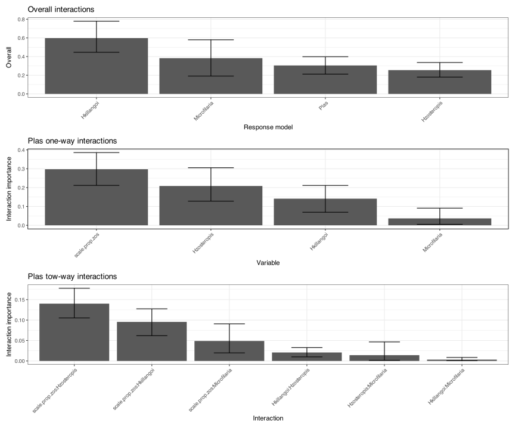

# Load required packages
# Data manipulation
library(tidyverse)
library(DT)
library(here)
# Modeling
library(mrIML)
library(tidymodels)
library(future)
library(finetune)
library(flashlight)
# Plotting
library(igraph)
library(ggnetwork)
library(cowplot)
library(patchwork)
# Load custom functions
source(here("R-functions", "select_variables.r"))
source(here("R-functions", "plot_network.r"))
# Set up parallel processing
n_cores <- parallel::detectCores()
plan("multicore", workers = 2)
# Set seed
set.seed(1234)2 Avian blood parasites
This case study demonstrates the application of MrIML 2.0 to a small dataset of vector-borne blood parasites in New Caledonian birds. We analyze presence/absence data from four parasite species:
- Haemoproteus zosteropis species complex
- H. killangoi species complex
- Plasmodium spp.
- Nematode Microfilaria species
The dataset includes 449 individual birds and a covariate representing the proportion of captures attributed to Zosterops spp. at each site, serving as a proxy for host relative abundance.
data <- MRFcov::Bird.parasites
datatable(data)To prepare the data for multi-response modeling, we separate it into Y (response), X (predictors), and X1(co-occurrence predictors). This is how data is parsed to mrIML.
# Prepare response variables (parasite species)
Y <- data %>%
dplyr::select(-scale.prop.zos) %>%
dplyr::select(sort(names(.)))
# Prepare predictor variables (host abundance proxy)
X <- data %>%
dplyr::select(scale.prop.zos)
# Co-occurrence data (other parasites as predictors)
X1 <- Y %>%
dplyr::select(sort(names(.)))2.1 Model definition
We formulate three models of community assembly to compare the relative importance of co-occurrence versus environmental effects:
- Parasite co-occurrence only (just X₁, no other covariates)
- Host abundance only (just X, the ‘host abundance model’)
- Combined model (both X₁ and X, co-occurrence + host abundance)
However, all three of these model configerations utilise the same base random forest model specified using tidymodels.
# Define random forest model
model_rf <- rand_forest(
trees = 1000,
mode = "classification",
mtry = tune(),
min_n = tune()
) %>%
set_engine("randomForest")2.1.1 Model 1: Combined model (co-occurrence + host abundance)
yhats_rf_combined <- mrIMLpredicts(
X = X,
Y = Y,
X1 = X1,
Model = model_rf,
balance_data = 'no',
tune_grid_size = 5,
prop = 0.7,
k = 5,
racing = TRUE
)2.1.2 Model 2: Host abundance only
yhats_rf_nox1 <- mrIMLpredicts(
X = X,
Y = Y,
X1 = NULL,
Model = model_rf,
balance_data = 'down',
tune_grid_size = 5,
prop = 0.7,
k = 5,
racing = TRUE
)2.1.3 Model 3: Co-occurrence only
yhats_rf_nox <- mrIMLpredicts(
X = NULL,
Y = Y,
X1 = X1,
Model = model_rf,
balance_data = 'down',
tune_grid_size = 5,
prop = 0.7,
k = 5,
racing = TRUE
)2.2 Model performance
The proformance of each model for the diferen taxa can be explored using mrIMLperformance(). Below is an example for the combined model.
ModelPerf_combined <- mrIMLperformance(yhats_rf_combined)
ModelPerf_combined$model_performance# A tibble: 4 × 8
response model_name roc_AUC mcc sensitivity ppv specificity prevalence
<chr> <chr> <dbl> <dbl> <dbl> <dbl> <dbl> <dbl>
1 Hkillangoi rand_fore… 0.817 0.224 0.966 0.898 0.188 0.116
2 Hzosteropis rand_fore… 0.890 0.676 0.897 0.916 0.789 0.265
3 Microfilaria rand_fore… 0.954 0.544 0.992 0.954 0.4 0.0980
4 Plas rand_fore… 0.838 0.449 0.916 0.875 0.5 0.196 We compare the three model configerations against one another based on average AUC.
# Evaluate model performance
ModelPerf_noX1 <- mrIMLperformance(yhats_rf_nox1)
ModelPerf_noX <- mrIMLperformance(yhats_rf_nox)
tibble(
Model = c(
"Combined model",
"Host abundance only",
"Co-occurrence only"
),
AUC = c(
ModelPerf_combined$model_performance$roc_AUC %>%
mean(),
ModelPerf_noX1$model_performance$roc_AUC %>%
mean(),
ModelPerf_noX$model_performance$roc_AUC %>%
mean()
) %>%
round(., 3)
)# A tibble: 3 × 2
Model AUC
<chr> <dbl>
1 Combined model 0.875
2 Host abundance only 0.841
3 Co-occurrence only 0.694The combined model shows improved performance over the individual components, suggesting that both co-occurrence patterns and host abundance contribute to parasite distribution patterns, however this is a small dataset and so there is significant variation in the metric depending on the cross-validation and test-training split.
2.3 Bootstrap Analysis for Uncertainty Estimation
From here on, we focus on the combined model. However, we can use bootstraping to capture the uncertainty.
# Run bootstrap analysis for uncertainty estimation
bs_avian <- yhats_rf_combined %>%
mrBootstrap(num_bootstrap = 100)# Calculate variable importance with bootstrap confidence intervals
bs_impVI <- mrVip(
yhats_rf_combined,
mrBootstrap_obj = bs_avian,
threshold = 0.0,
global_top_var = 10,
local_top_var = 5,
model_perf = ModelPerf_combined
)
# Display variable importance plot
bs_impVI[[3]]2.4 Partial Dependence Analysis
# Create bootstrapped partial dependence plots for Plasmodium
pds <- mrPdPlotBootstrap(
yhats_rf_combined,
mrBootstrap_obj = bs_avian,
vi_obj = bs_impVI,
target = 'Plas',
global_top_var = 5
)
# Display partial dependence plots
pds[[2]]
2.5 Environmental Covariate Effects
# Examine the relationship between host abundance and parasite occurrence
covar <- mrCovar(
yhats_rf_combined,
var = 'scale.prop.zos',
sdthresh = 0.01
)
# Display the three components of covariate analysis
covar[[1]] / covar[[2]] / covar[[3]]2.6 Interaction Analysis
# Analyze feature interactions using H-statistics
int_ <- mrInteractions(
yhats_rf_combined,
num_bootstrap = 100,
feature = 'Plas',
top_int = 10
)
# Display interaction plots
int_[[1]] / int_[[2]] / int_[[3]]
2.7 SHAP Analysis for Individual Predictions
# Perform SHAP analysis for detailed feature attribution
shap_results <- mrShapely(
yhats_rf_combined,
taxa = "Plas",
plot_feature_effects = TRUE,
plot_dependencies = TRUE,
plot_2D_dependencies = FALSE
)Exact Kernel SHAP values# Display SHAP results
if (!is.null(shap_results$feature_effects)) {
shap_results$feature_effects
}$Plas2.8 Co-occurrence Network Construction
# Build co-occurrence network from bootstrap results
assoc_net <- mrCoOccurNet(bs_avian)
plot_network(
assoc_net,
strength_threash = 0.05,
network_title = "Parasite Co-occurrence Network"
)